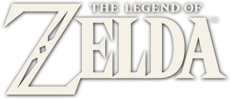

|.png)
 |
|

Je m'appelle Thomas et je suis passionné par le développement informatique et l'univers du jeu vidéo. J’ai créé ce site pour partager ma passion pour The Legend of Zelda, une saga qui m’a marqué par son histoire, ses personnages et son monde rempli d’aventure. Depuis que j’ai découvert les jeux Zelda, j’ai toujours été fasciné par l’exploration d’Hyrule, les énigmes des donjons et les différentes versions de Link au fil des jeux. Cette série a su créer un univers unique qui a marqué plusieurs générations de joueurs. En tant qu’étudiant en informatique et réseaux, j’ai également voulu utiliser ce projet comme un moyen de pratiquer le développement web. Ce site me permet donc à la fois de m’entraîner à créer un site, mais aussi de partager des informations, des découvertes et du contenu autour de l’univers de The Legend of Zelda. Ce site est donc un mélange entre passion pour le jeu vidéo et apprentissage du développement web.
| demande | prix |
|---|---|
| Création d'un nouveau site | 2000 euros |
| Formation dev WEB | 500 euros |